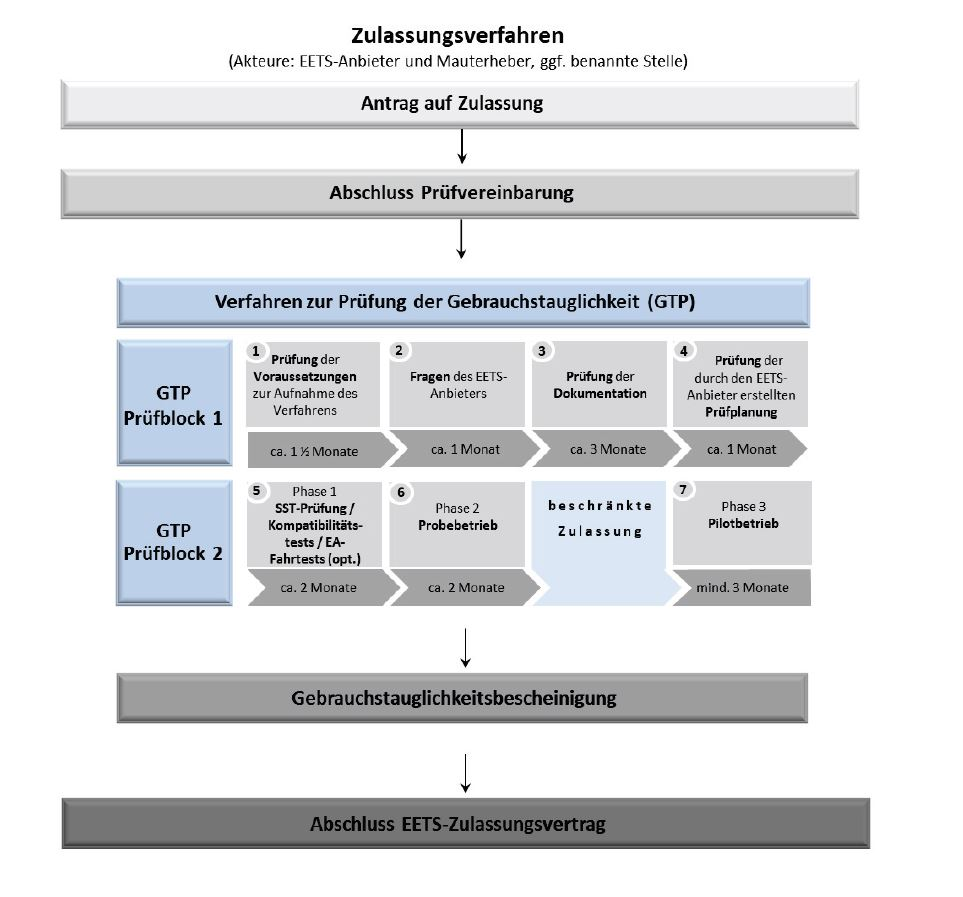

(Fundstelle: BAnz AT 29.10.2021 V 2)
Entgeltordnung
1. Vorbemerkung
Im Rahmen der Durchführung des Zulassungsverfahrens zur Erbringung mautdienstbezogener Leistungen auf dem EETS-Gebiet BFStrMG sind vom BALM Gebühren für die Geltendmachung individuell zurechenbarer öffentlicher Leistungen zu erheben. Das Zulassungsverfahren gliedert sich in folgende Phasen:

2. Gebühren
Von einem EETS-Anbieter, der das Zulassungsverfahren durchläuft, sind die nachfolgend genannten Pauschalbeträge zu entrichten:
| | Verfahrensphase | Pauschalentgelt |
| a) | vor Beginn der Prüfung der Voraussetzungen und Dokumentation (GTP Prüfblock 1, Nummer 1, 2, 3 und 4) | 22 500 Euro |
| b) | vor Beginn der Prüfung der wirtschaftlichen Vorgaben | 25 500 Euro |
| c) | vor Beginn der GTP Phase 1 (GTP Prüfblock 2, Nummer 5) | 143 500 Euro |
| d) | vor Beginn des Probebetriebs (GTP Prüfblock, Nummer 6) | 48 500 Euro |
| e) | vor Beginn des Pilotbetriebs (GTP Prüfblock, Nummer 7) | 62 000 Euro |
| | Gesamtbetrag: | 302 000 Euro |
3. Fälligkeit
Diese Pauschalbeträge sind jeweils vor Beginn der zugehörigen Verfahrensphase fällig. Das BALM fordert einen EETS-Anbieter vor jeder Verfahrensphase schriftlich zur Zahlung des Betrags auf. Die Verfahrensphase wird vom BALM erst nach Eingang der entsprechenden Zahlung eingeleitet.
4. Erneute Durchführung des Verfahrens
Es ist möglich, dass eine erneute Prüfung eines Teils oder des gesamten Teilsystems eines EETS-Anbieters notwendig wird. Dies ist der Fall, wenn
- 1.
der Anbieter Änderungen an seinem EETS-Teilsystem vornimmt, die Auswirkungen auf die Gebrauchstauglichkeit haben können,
- 2.
der Mauterheber Änderungen an seinem EETS-Teilsystem oder am EETS-Gebiet BFStrMG vornimmt, die Auswirkungen auf die Gebrauchstauglichkeit haben können,
- 3.
der Betreiber des Mautsystems Änderungen am Mautsystem vornimmt, die Auswirkungen auf die Gebrauchstauglichkeit haben können,
- 4.
bei der Durchführung des EETS im EETS-Gebiet BFStrMG nachhaltige technische Probleme auftreten,
- 5.
das Verfahren zur Feststellung der Gebrauchstauglichkeit wesentlich geändert wird oder
- 6.
der begründete Verdacht des Mauterhebers auf Nichterfüllung der Vorgaben durch den Anbieter besteht.
Werden die durchgeführten Anpassungen oder Hinweise auf Nichteinhaltung von Vorgaben vom Mauterheber als derart gravierend eingestuft, dass die ursprünglichen Prüfaussagen nicht mehr als gültig akzeptiert werden können, sind die entsprechenden Teile der Prüfung zumindest für die von den Anpassungen betroffenen Systemteile erneut durchzuführen und die Systemteile und die dadurch tangierten Prüfszenarien exakt festzustellen und abzugrenzen.
Die erneute Durchführung des Verfahrens zur Gebrauchstauglichkeit orientiert sich an denselben Phasen wie die initiale Durchführung. Sämtliche in der Bewertung der Änderungen als relevant eingestuften Prüfszenarien aller Verfahrensphasen müssen komplett durchlaufen werden. Die erneute Durchführung des Verfahrens zur Gebrauchstauglichkeit wird dem EETS-Anbieter berechnet, es sei denn, Änderungen im System des Mauterhebers sind ursächlich für die erneute Durchführung des Verfahrens. Sollte eine Verfahrensphase von der erneuten Durchführung nicht betroffen sein, ist der entsprechende Pauschalbetrag nicht zu entrichten.
Sollte eine der Verfahrensphasen von der erneuten Durchführung teilweise betroffen sein, ist der Pauschalbetrag nach billigem Ermessen des Mauterhebers anteilig zu entrichten.